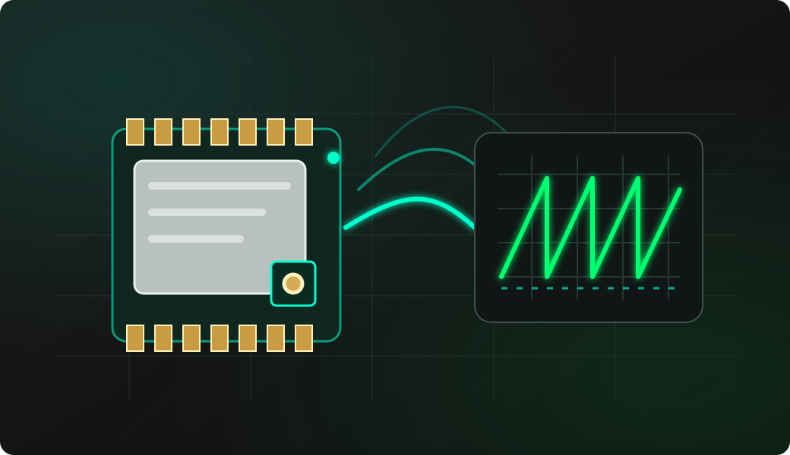

Complete modem profile
Set frequency, bandwidth, spreading factor, coding rate, power, preamble, sync word, CRC, IQ and TCXO behavior.
ESP32-S3 and SX1262 LoRa debugging
ESP32 Bit Pirate turns a compatible ESP32-S3 board plus an SX1262 module into a transparent LoRa workbench. Wire and probe the radio, configure every modem parameter, observe RSSI and CAD, send or receive packets, scan activity, preserve .lora captures and inspect compatible Meshtastic frames.

Prove the hardware and receive path before transmitting. A LoRa packet is only decodable when both radios use compatible modem settings and hardware for the same physical band.
Wire 3.3 V, ground, SPI, CS, RESET, BUSY and DIO1. Connect an antenna matched to the module RF band before any transmission.
Run mode lora, accept or change the pins, then use config and status to verify the complete radio profile.
Start receive-side diagnosis with rssi, cad and receive while a known second radio sends the same profile.
Use airtime before send. Keep transmission tests short, controlled and compliant with the rules for the selected frequency.
Use scan or waterfall for frequency activity, then record and load when a packet and its profile must be reproduced.
mode lora
config
status
rssi 250
cad 250
receive
airtime 16
send Hello
scan
waterfall
record
load
meshtasticCore CLI flow from the current implementation. spam, jam and every transmit workflow are for isolated, authorized RF tests only.
Choose the smallest workflow that answers the current bench question, then move to a detailed recipe when the hardware and profile are understood.
Set frequency, bandwidth, spreading factor, coding rate, power, preamble, sync word, CRC, IQ and TCXO behavior.
Exchange text or hexadecimal payloads up to 255 bytes and inspect receive time, gap, length, RSSI, SNR, HEX and ASCII.
Monitor channel energy with RSSI or use LoRa Channel Activity Detection to distinguish possible compatible LoRa activity.
Scan an expected range, render display activity or map received signal level to audio before attempting packet decoding.
Record one received payload and its complete modem profile to LittleFS, then load it for a controlled single transmission.
Apply compatible presets and inspect text, position, node information, telemetry and routing frames without hiding the radio profile.
The SX1262 provides the radio. The packet format and network behavior above that radio depend on the software stack in use.
The normal LoRa shell controls modem parameters and raw payloads directly. Two radios can exchange packets when their profiles and bands match.
Raw packet mode does not join a network, create device sessions, handle gateways or communicate with a LoRaWAN network server.
The meshtastic shell provides supported presets, channel-key handling and frame inspection. Exiting restores the original raw LoRa profile.
Software frequency limits do not change RF matching. Confirm the exact module variant, its antenna and every signal pin before judging radio performance.
Power the module from a stable 3.3 V source and share ground. Do not apply 5 V logic to the SX1262 or ESP32 GPIO.
The default mapping is SCK GPIO5, MISO GPIO6, MOSI GPIO7, CS GPIO4, RESET GPIO3, BUSY GPIO2 and DIO1 GPIO1.
Core1262-style boards commonly use DIO2 for RF-switch control and DIO3 for TCXO control. The default TCXO voltage is 1.8 V.
The pictured Core1262-HF is matched for 850–930 MHz. Select a module and antenna built for the intended regional band.
Frequency, bandwidth, spreading factor, coding rate, sync word, CRC and IQ mode must be compatible between peers.
Respect regional frequency, power, bandwidth and duty-cycle rules. Use repeat, continuous-wave or similar tests only in an isolated authorized lab.
Separate bus faults, channel energy, LoRa activity and valid packets. Each layer answers a different question.
If BUSY remains high, check RESET and BUSY first. If no valid radio response returns, recheck 3.3 V, ground, SPI, CS and the selected pin mapping.
RSSI can show any in-band energy. Match the complete LoRa profile and use CAD before expecting receive to decode a valid packet.
CAD indicates possible LoRa preamble activity, not a guaranteed valid payload. Check sync word, CRC, IQ, preamble and receive timing.
A firmware setting within 150–960 MHz cannot retune the module RF matching. Use the correct SX1262 board variant and antenna.
Keep a valid, small .lora file in LittleFS. The loader validates its fields, sends once with the saved profile and restores the prior profile.
The waterfall is a display visualization. On a target without a supported screen, use scan or rssi for serial output instead.
Start with the SX1262 module reference for RF and pin details, then confirm that the selected ESP32-S3 target exposes the required GPIO and enough power for the radio.
Open the T190 board page for its integrated display, button mapping and optional onboard SX1262 pinout.
Open the SX1262 module page for Core1262 photos, wiring, default profile, command behavior and source-based implementation notes.
Open the ESP32-S3 DevKit page when wiring the radio through exposed GPIO or the project Dock.
Compare supported ESP32-S3 boards before changing the default pin map or relying on display-only workflows.
Follow the batch in order for a first bring-up, or jump directly to the task that matches a radio already known to work.
Connect the protocol overview to the hardware page, serial tools, LittleFS workflow, board selection and firmware source.
Check photos, pinout, default radio profile, commands and the Core1262-HF physical band.
Open SX1262 module referenceUse the SPI page when the radio probe fails before debugging LoRa settings.
Open SPI debugging guideDrive LoRa mode and its interactive commands from a compatible browser.
Open Web Serial TerminalManage saved .lora packet files from the browser-based device UI.
Install a current firmware build on a supported ESP32-S3 board.
Open Web FlasherCheck available GPIO and display support before selecting a target.
Compare supported boardsBrowse LoRa alongside the complete hardware-debugging recipe library.
Browse all recipesInspect the current implementation, releases and issues affecting LoRa mode.
Open GitHub repositoryShort answers for the distinctions and settings that most often block a first packet exchange.
Yes. LoRa mode supports SX1262 hardware connected over SPI with RESET, BUSY and DIO1 control lines.
No. Raw LoRa packet exchange configures the radio modem directly; it does not join a LoRaWAN network or manage sessions, gateways and network-server communication.
Frequency, bandwidth, spreading factor, coding rate, sync word, CRC and IQ mode must be compatible. The module and antenna must also match the physical RF band.
It applies supported modem presets and provides channel-key, send, receive and frame-inspection workflows for analysis. Exiting stops receive and restores the previous raw LoRa profile.